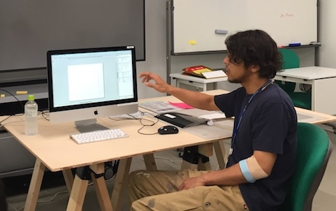
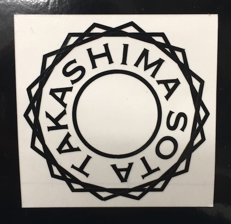
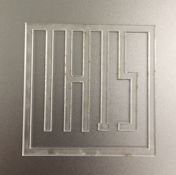
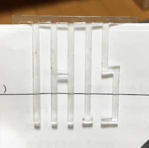
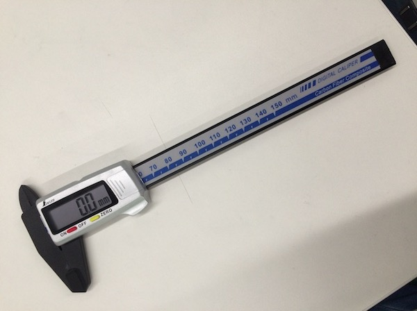
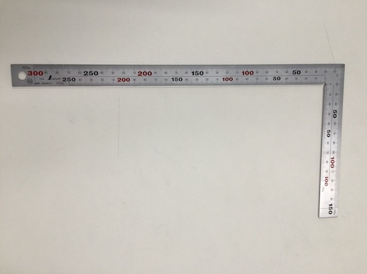
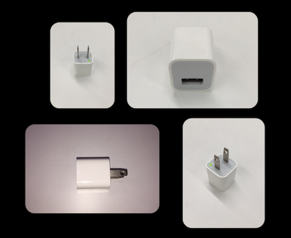

fabble
Week1
5/11.16 固定・把握チーム
自分の役割⇨写真記録実際に体験中のワークショップの様子を写真に収め、それを元に改善点を探した。
使用した工具
大型バイス ultra・バイスプライヤー ultra
・G型クランプ
・テーブルバイス
・ヤンキーバイス
・Eリングプライヤー
・モンキーレンチ
・ネジザウルス
個人の改善点
１箇所からしか写真を撮っていなかった為に反対側では何が起こっているのかが見えにくかった。次回は様々な角度から写真を撮って、あとで確認をしやすいようにしたい。
Week2
6/14.15.20 デジタルファブリケーション（加工工程実践）
GRAPHTEC カッティングプロッターCE-6000-60○ステッカー作成○
作業工程
データの作成
「Adobe illustrator CC」を使ってステッカーにしたいイラストを描き、データ化する。※テキストはアウトライン化しておき、重なっている部分は「シェイプ選択ツール」で選択し 繋げたほうが綺麗に仕上がる。
↓
ファイル→別名で保存→形式を.epsにして保存機材準備
カッティングプロッターの刃先を出しすぎに注意してシートに当てる。↓
電源を入れ、シートを本体後ろからセットして、テストカットをする。↓
テストカットが完了したら、新しいスタート位置を設定してデータの書き出しを行う。データの出力
「cuttingMaster3」で機械にデータを送信してENTERを押す。仕上げ
カッターで丁寧にいらない部分を取り除き、リタックを貼り付けて完成。作成したステッカー

このステッカーのデータ
○担当以外の機材○
レーザー加工機を使用してペーパークリップ作成
使用機材trotec speedy 360
↓完成したペーパークリップ↓

デザイン.......「THIS」という文字をクリップにすることで視覚的にも「ココ」とわかりやすくした。
このペーパークリップのデータ
○個人の改善点○
データを作る際に重なっている部分を「シェイプ選択ツール」で選択せずにそのままにしていたので、出来上がったステッカーがうまく結合されずにバラバラになってしまった。
細かすぎる場所は潰れてしまうことがあるとわかったので、次に使う際はメリハリをつけたデザインにしたい。
Week3
7/5.6.11 3Dモデリング（製造工程研究）
Autodesk Fusion 3603Dモデリング
作業工程
今回モデリングしたのはiphoneの充電器 「Apple 5W USB電源アダプタ」計測・測量
計測するために使った測定器「デジタルノギス カーボンファイバー製 150mm」
↓

「曲尺 厚手広巾シルバー」
↓

初めに、全体の形を大まかに把握してから充電器の全ての辺の長さを測る。

計測結果
白いプラスチックの部分 高さ28mm 横16mm 湾曲半径5mmコンセントに挿す部分 高さ16mm 横5mm 幅1.3mm 穴半径1.6mm
USBを挿す部分 奥行き11.6mm 底辺の長辺12.7mm 短辺5.4mm
計測ができたら「Fusion 360」を使って3Dモデリングをする。
Fusion360を起動するとこのような画面になるので、赤線と青線の重なる原点から書き始める。

手順
⑴まずコンセントに挿す部分とUSBを挿す部分は置いておき、それ以外の四角形を下側に押し出す。⑵ 計測した大きさの立方体ができたら面取りをして白い部分の形はほぼ完成。
⑶ ⑴で押し出した方向と逆の方向にコンセントの挿す部分を２つ押し出す。
⑷ ⑶で作ったものに丸い穴を開ける。
⑸ USBを挿す部分を切り取って完成。
出来上がった３Dモデリング↓

この3Dモデリングのデータ
考察（製造方法の推測）
プラスチックでできている部分はもともと用意してある型に流し込んでできていると予想した。また、コンセントに挿す金属の部分はあらかじめ開けておいたスペースにはめ込んだと思う。
個人の感想
計測したような日頃使っている何気ないものでも、よく観察すると様々な工夫が凝らされているのだと気づいた。また、以前から興味のあった3Dのモデリングを今回初めてしてみたが、自分の想像よりも難しくなんでもやってみないと
分からないなと実感した。押し出すという工程がただ下から順番にすれば良いのではなくあえて中心から上下に広げていく
といったような、どこから始めると作りやすいかを考えて行わなければならないのが難しく感じた。
授業内だけで終わらず、他のものも機会があれば3Dモデリングしたい。
return